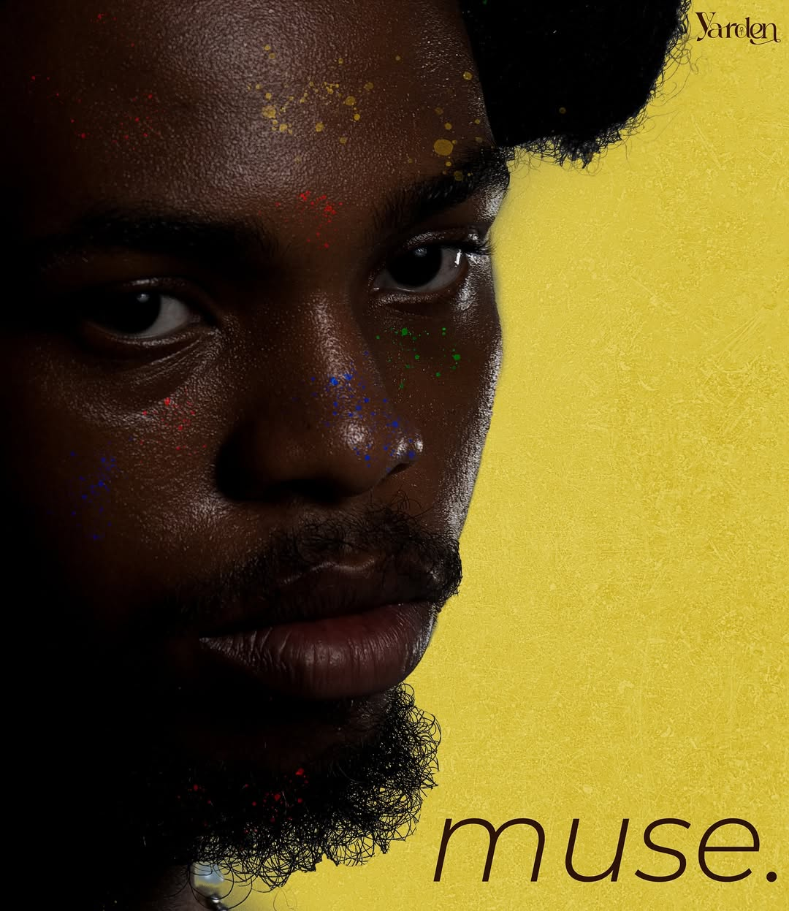

YARDEN / THE MUSE ERA● A VISUAL INTRODUCTION
NEW NOSTALGIA FROM LAGOS
Feel everything.
Songs for the moments you want to hold on to.
THE STORY IS IN THE SOUNDSCROLL TO EXPLORE ↓
THE DISCOGRAPHY / LISTEN CLOSELY
Made to feel.
Every record is a little world of its own. Take your time inside.

▶ARTWORK / 2025FEATURED PROJECT EP
Muse
2025 · 6 tracks · Yarden
MORE PROJECTS
SOME SONGS STAY WITH YOU